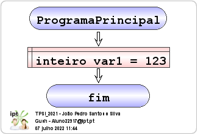

Números inteiros
Uma variavel que guarde um valor inteiro suporta valores desde -9223372036854775808 a 9223372036854775807
Fluxograma
Pseudocódigo

inicio ProgramaPrincipal definir inteiro var1 = 123 fim ProgramaPrincipal